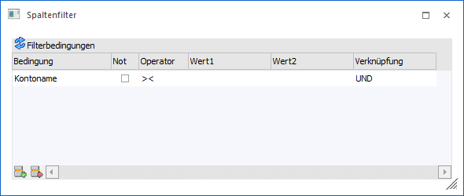

Über den Button "Spalte filtern" (zuvor linke Maustaste auf das Pfeilsymbol neben der Spaltenbezeichnung) kann innerhalb einer Tabellenspalte nach selbst zu definierenden Datenbereichen gefiltert werden.

Ø Bedingung
Auf diese Hinterlegung bezieht sich die eigentliche Filterung. Das Feld "Bedingung" wird dabei immer automatisch gefüllt und ist abhängig davon, von welcher Spalte aus man den Filter geöffnet hat.
Ø Not
Wenn diese Option aktiv ist, dann wird die nachfolgende Bedingung verneint, d.h. es werden nur Datensätze angezeigt die außerhalb des selektierten Bereichs liegen.
Ø Operator
Aus der Auswahlliste kann zwischen folgenden Operatoren gewählt werden:
|
Operator |
Bezeichnung |
Bedeutung |
|
>< |
Von - Bis |
Der Bereich wird mit einer Unter- und Obergrenze eingeschränkt |
|
= |
Gleich |
Variablen, deren Wert mit der Bedingung genau übereinstimmt |
|
<> |
Ungleich |
Variablen, deren Wert nicht dieser Bedingung unterliegt |
|
> |
Größer |
Variablen, deren Wert größer ist als jener in der Bedingung |
|
< |
Kleiner |
Variablen, deren Wert kleiner ist als jener in der Bedingung |
|
>= |
GrößerGleich |
Variablen, deren Wert größer ist als jener in der Bedingung oder mindestens gleich |
|
<= |
KleinerGleich |
Variablen, deren Wert kleiner ist als jener in der Bedingung oder höchstens gleich |
|
% |
Wie |
Nur wenn die Bedingung im Wert enthalten ist Beispiel Eingabe "Sport%" |
|
=0 |
IS NULL |
Variablen, deren Wert gleich Null ist (NULL bedeutet, dass das Feld in der Datenbank keinen Wert - auch nicht 0 - enthält). |
Ø Wert1 / Wert2
In diesen Feldern können die Filterkriterien gemäß dem Operator eingetragen werden. Der "Wert2" steht nur beim Operator "von - bis" zur Verfügung.
Ø Verknüpfung
Wenn eine zweite oder mehr Bedingungszeilen im Filter angelegt werden sollen, dann muss über diese Einstellung entschieden werden wie die unterschiedlichen Bedingungen miteinander in Verbindung stehen. Hierfür stehen folgende Einstellungen zur Auswahl:
ü Und
Nun wenn die
unterschiedlichen Bedingungen gemeinsam auf einen Datensatz zutreffen wird
dieser angezeigt.
ü Oder
Wenn eine der
unterschiedlichen Bedingungen zutrifft, dann wird der Datensatz angezeigt.
Tabellenbuttons
Ø Zeile einfügen
Mit diesem Button können zusätzliche Bedingungszeilen eingefügt werden.
Ø Zeile entfernen
Mit diesem Button können bestehende Bedingungszeilen gelöscht werden.
Ø Ausgabe Excel
Durch Anwahl des Buttons "Ausgabe Excel" wird der Inhalt der Tabelle an Microsoft Excel übergeben.
Ø Tabelleneinstellungen speichern
Die Spalten einer Tabelle können grundsätzlich an beliebige Positionen verschoben, bzw. in der Breite entsprechend angepasst werden. Durch Anwahl des Buttons "Tabelleneinstellungen speichern" werden die Einstellungen benutzerspezifisch gespeichert und bei dem nächsten Aufruf des Programmpunktes wieder vorgeschlagen.
Ø Gesamteinstellungen speichern
Im Gegensatz zu "Tabelleneinstellungen speichern" können mit "Gesamteinstellungen speichern" mehrere Tabellenaufbauten gespeichert und nach Wunsch geladen werden. Zusätzlich werden Sonderfunktionen der Tabelle (z.B. "Spalte gruppieren") ebenfalls bei der Speicherung bedacht.
Buttons
Ø Ok
Durch Anklicken des Buttons "OK" bzw. der Taste F5 wird die Filterung durchgeführt.
Ø Ende
Durch Drücken des Buttons "Ende" bzw. der Taste ESC wird der Programmbereich geschlossen.